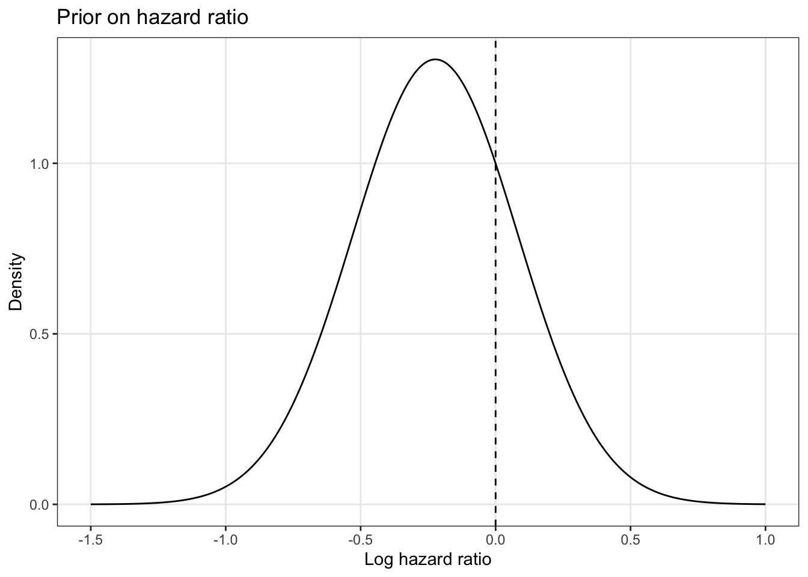

gantt
title Seamless Phase-II/III design
dateFormat X
axisFormat %s
section Phase-II
Interim phase-II: active, 0, 50
Phase-II: 0, 100
Evaluation for Phase-III: crit, 0, 100
section Phase-III
Phase-III: 0, 360
This vignette was motivated by a consulting of CTU Bern (C2597). It is an example of a Bayesian seamless phase-II/III design with a correlated adverse event endpoint and a time-to-event primary endpoint.
3.1 Available evidence
For the control arm we used information from a published randomized controlled trial. The authors reported from approximately 350 total randomized patients to a control arm a disease-free survival percentage of approximately 50% at 24-months. For our sample size calculation we assumed a slightly more conservative percentage of 45%.
For the experimental arm we use information from another study with a similar intervention which reported an approximate 70% progression-free survival at 24 months. We assumed a more conservative 60% progression-free survival at 24-months in the experimental arm.
For adverse events outcomes (defined by grade 3 CTCAE) in the experimental arm we used the reported number of a review from 20 (4 prospective studies and 16 retrospective studies). For the prospective studies the authors reported a weighted average of 13.9% adverse events, whereas for the retrospective studies a value of 10.4%. We used a slightly more conservative value of 15% for the sample size calculation.
No assumptions for the correlation between adverse events and disease-free survival were reported. In our used simulation approach we assumed correlations of 0.1, 0.5 and 0.9 between the adverse event outcome and the progression-free survival.
3.2 Endpoints and testing hierarchy
Safety endpoint: Adverse events in experimental arm (for phase-II part)
Primary endpoint: Disease-free survival at 24-months (phase-III endpoint)
Of note, these are not co-primary endpoints, because the safety endpoint is not required to define a trial success. But we test the endpoints in a hierarchical way: Only if the probability for an excess adverse event proportion is below a given threshold, the primary endpoint will be assessed for futility assessment.
3.3 Hypotheses
We consider the following one-sided hypotheses for the phase-III trial
- Null hypothesis: Log hazard ratio \(\theta\) between experimental arm and control arm is greater or equal than zero, that is, \(H_0: \theta \geq 0\),
- Alternative hypothesis: Log hazard ratio \(\theta\) between experimental arm and control arm is smaller than zero, that is, \(H_0: \theta<0\).
3.4 Trial structure
3.5 Methods
3.5.1 Gaussian approximation
We approximate the log hazard ratio of disease-free survival by \[ \theta=log(HR)=\frac{log(s_1)}{log(s_0)} \] where \(s_1\) is the disease-free survival probability of the experimental arm and \(s_0\) is the disease-free survival probability of the control arm. In our case we have \(s_1=0.6\) and \(s_0=0.45\) leading to a \(log(HR)=0.64\).
We approximate the variance of \(\theta\) with \(4/m\), where \(m\) is the number of events (see [1], chapter 2.4.2).
3.5.2 Phase-II part
We plan the phase-II part with an a priori fixed sample size of 100 patients. A safety interim analysis is planned after 25 patients are recruited in the experimental arm.
3.5.3 Early stopping phase-II
We plan an safety interim analysis which assess’ the probability for an excess adverse event proportion using a Bayesian predictive probability in the experimental arm.
The trial is stopped early if \(PP>\theta_{S}\), for an upper discontinuation proportion threshold \(p_{max}\), \[ \begin{aligned} PP&=E\left[I\left\{ P\left(p_1>p_{max}|r_{1}, n_{1}, s_{1}\right)>\theta_{T_{Non-safe}}\right\}|r_{1}, n_{1}\right] \\ &=\sum_{s_1=0}^{m_1} I(P(p_1 > p_{max}|r_{1},n_1,s_1)>\theta_{T_{Non-safe}}) P(S_{1}=s_1|r_{1}, n_1), \end{aligned} \] where \(r_1\) (number of observed adverse events at interim analysis), \(n_1\) (number of patients at interim analysis), \(s_1\) (expected future events at interim analysis) and a threshold \(\theta_{T_{Non-safe}}\).
If at this stage the trial is considered as non-safe we stop the trial. Otherwise we recruit more patients until the planned sample size is reached.
3.5.4 Decision for phase-III
The decision to continue seamlessly into a phase-III trial is based on two criteria
- We stop the trial at the end of phase-II part if there is a high probability for excess adverse events (same as described above).
- If we have a low predictive probability for a successful phase-III trial at the end of phase-II.
For the latter approach we use a Bayesian predictive ‘interim monitoring’ approach as described in [1], chapter 6.6.3. In brief, we use the observed data at the end of phase-II (interim data \(y_m\)), the prior information and the assumed number of ‘future’ phase-III patients (\(Y_n\)) to calculate the predictive probability of \(P(\theta<0|y_m, Y_n)\). We stop the trial for futility if \(P(\theta<0|y_m, Y_n)<\epsilon_{fut}\), which is
\[ 1-\Phi\left[ \frac{\sqrt{m_{phase3}}\theta_{phase3}}{2}+\frac{m_{phase2}\theta_{phase2}}{2\sqrt{m_{phase3}}}+\frac{m_{prior}\theta_{prior}}{2\sqrt{m_{phase3}}}+\sqrt{\frac{m_{prior}+m_{phase2}+m_{phase3}}{m_{phase3}}}\cdot z_{1-\epsilon_{fut}} \right], \] where \(z_{1-\epsilon_{fut}}\) is the upper \(1-\epsilon_{fut}\)%-quantile of a Gaussian distribution.
The trial at the end of phase-III is considered as successful if the posterior distribution of the log hazard ratio \(P(\theta<0|\theta_0, y_m, Y)\geq 1-\epsilon_{success}\).
3.5.5 Simulation assumptions
We assumed bivariate exponentially distributed time to event outcomes for adverse events and disease-free survival. We used the following componentwise rate parameters
| Parameter | Value |
|---|---|
| Exponential rate parameter for time to disease progression or death (control arm) | 1/30 |
| Exponential rate parameter for time to disease progression or death (experimental arm) | 1/47 |
| Exponential rate parameter for adverse events (experimental arm) | 1/37 |
for simulating data. Based on these parameters we get the proportion of disease progression or death at 24-months in the control arm of
Show R code
rate_event_0 <- 1/30
# Proportion of patients with disease progression or death in control arm at 24-months
paste0(round(pexp(24, rate_event_0)*100, 0), "%")[1] "55%"and in the experimental arm of
Show R code
rate_event_1 <- 1/47
# Proportion of patients with disease progression or death in experimental arm at 24-months
paste0(round(pexp(24, rate_event_1)*100, 0), "%")[1] "40%"and the proportion of adverse events at 6-months in the experimental arm of
Show R code
rate_tox_1 <- 1/47
# Proportion of patients with disease progression or death in experimental arm at 6-months
paste0(round(pexp(6, rate_tox_1)*100, 0), "%")[1] "12%"For the sample size calculation we assumed that for patients with an adverse event, 24-month progression-free survival information will be available and used for the sample size calculation.
3.5.5.1 Stopping boundaries phase-II
We assumed the following parameters for the excess adverse event proportion stopping in the experimental arm:
| Parameter | Value |
|---|---|
| Excess threshold | 25% |
| Beta prior parameters | a=0.2, b=0.8 |
| Initial interim sample size | n=25 |
| Final sample size | n=50 |
| \(\theta_{T_{Non-safe}}\) | 60% |
| \(\theta_{S}\) | 60% |
This gives us the following stopping boundaries based on the predictive probability:
Show R code
p_max <- c(0.25)
# Prior information
a_1 <- 0.2
b_1 <- 0.8
x <- seq(0,1,0.001)
n_initial <- 25
r <- 0:n_initial
n_increase <- 25
n_max <- 50
n <- seq(n_initial, n_max, n_increase)
r <- 0:n_max
m <- n_max-r
#### Scenario
theta_T <- 0.6
data <- expand.grid(n=n, r=r) %>% arrange(n) %>%
filter(n>=r) %>% mutate(i=n_max-n+1)
data <- expandRows(data, count=3)
data <- data %>% group_by(n, r) %>%
mutate(m=n_max-n, ind=1, i=cumsum(ind)-1, ind=NULL)
data <- data %>%
mutate(PS1=dbbinom(i, size=m, alpha=a_1+r, beta=b_1+n-r),
Ti=1-pbeta(p_max, a_1+r+i, b_1+n_max-r-i),
ind=ifelse(Ti>theta_T, 1, 0), n_max)
data <- data %>% select(n_max, n, r, m, i, Ti, PS1, ind)
threshold_safety <- 0.6
data_pp <- data %>% group_by(n_max, n, r) %>% summarise(pp=round(sum(PS1*ind),6),
stop_pp=ifelse(pp>threshold_safety, 1, 0))
stop_boundaries0 <- data_pp %>% filter(stop_pp==1) %>%
group_by(n_max, n) %>% summarise(r=min(r), stop=NULL)
names(stop_boundaries0) <- c("Maximal sample size", "Interim sample size", "Stopping boundary")
stop_boundaries0# A tibble: 2 × 3
# Groups: Maximal sample size [1]
`Maximal sample size` `Interim sample size` `Stopping boundary`
<dbl> <dbl> <int>
1 50 25 8
2 50 50 143.5.6 Priors
We use the following priors for the simulation
3.5.6.1 Beta prior for excess adverse event stopping
As mentioned in the section of ‘available evidence’ there is some evidence for the adverse event proportion in the experimental arm. We assumed a slighty more conservative mean value of 0.2 with a prior weight of 1 patient from a beta prior with a=0.2 and b=0.8.
3.5.6.2 Gaussian prior on hazard ratio for disease-free survival
Show R code
rate_event_0 <- 1/30
rate_event_1 <- 1/47
expected_event_rate <- 0.5*(pexp(24, rate_event_0)+pexp(24, rate_event_1))
prior_mean <- log(0.8)
prior_weight <- 90
prior_sd <- 2/sqrt(prior_weight*expected_event_rate)For the prior on the hazard ratio for disease-free survival we assumed a Gaussian distribution centered on a mean of \(log(0.8)\) with a standard deviation of \(0.31\), which is based on the expected event rate with a prior weight of \(90\) patients. This leads to a probability that the prior log hazard ratio is greater than 0 of \(0.23\).
Show R code
x <- seq(-1.5, 1, 0.001)
data_plot <- tibble(x=x, y=dnorm(x, prior_mean, prior_sd))
# data_plot$x <- exp(data_plot$x)
# data_plot$y <- exp(data_plot$y)
ggplot(data_plot, aes(x, y))+geom_line()+theme_bw()+xlab("Log hazard ratio")+ylab("Density")+geom_vline(xintercept = 0, linetype="dashed")+theme(panel.grid.minor = element_blank())+ggtitle("Prior on hazard ratio")
3.6 Results
We simulated 1,000 trials with the above specification parameters and report the following trial operating characteristics:
| Parameter | Value |
|---|---|
| Probability of stopping at interim analysis (phase-II) because of safety under null hypothesis | 5.8% |
| Probability of stopping (phase-II) because of safety under null hypothesis | 15.4% |
| Probability of starting a phase-III trial under null hypothesis | 43.1% |
| Probability of not-starting a phase-III trial because of futility under null hypothesis | 27.7% |
| Probability of successful phase-III trial under the null hypothesis | 3% |
| Probability of successful phase-III trial under the alternative hypothesis | 81% |
| \(\epsilon_{fut}\) | 10% |
| \(\epsilon_{success}\) | 2.5% |
3.7 Comparison with frequentist phase-III trial
We compare our seamless phase-II/III design simulation results with a sample size calculation from a ‘classic’ frequentist phase-III design with a one-sided logrank test (\(\alpha=0.025\), \(1-\beta=0.8\)$ using the artsurv command in Stata:
artsurv, method(l) edf0(0.45) hr(1,0.64) np(2) recrt(0 0, 1, 0 ) onesided(1) alpha(0.025) power(0.8)
This command gives a calculated total sample size of 336 patients with an expected total number of events of 160 events.